Multimedia plugin
Multimedia plugin
With this plugin you can add documents (e.g. Word, OpenOffice Writer, Spreadsheets, PDF-files, etc.), images, movies, emails, additional product descriptions or any file which is associated with a program on your operating system to:
- Stock Items (Products) – Some examples of multimedia files are; product brochures, images, instruction films, guides, etc.
- Creditors (Suppliers) – Some examples are; scanning or pdf versions of supplier invoices, etc.
- Debtors (Customers) - Examples are; scanning or pdf versions of debtor (customer / client) credit agreements, images (photos), images of parcels and other documents, etc.
- Sales documents (i.e. Invoices, Credit notes and Quotes).
- Purchase documents (i.e. Purchases, Supplier returns and Orders).
- Batch entry – Add multimedia
- Groups - Multimedia files added for Reporting groups 1 and/or Reporting groups 2 in Setup → Groups (Setup ribbon)).
You may add multimedia files “To database”, “Link file”, “Copy file”, “URL” and “Paste from clipboard” options.
This allows you to access files (added to a specific stock item, creditor, debtor or document) and view, edit and print them, as necessary.
LICENCE
The multimedia plug-in is a versatile product. You can link files in divergent forms of osFinancials.
Examples are debtor, creditor, stock items and document groups. You can link a image to stock items or debtors but also link signed and scanned documents to debtors.
If you also have the email pro email send will also be linked to the document that was send and the debtor. This makes finding that email to the client with great ease. The outlook link plugin can scan true your outlook in and out box to see if there is email that uses the clients email address. If so it copies the email to the multimedia of that debtor / creditor.
Product in our shop.
Activate the plugin on the tab Setup then Icon Extra Plugins->Multimedia
If you have a TWAIN device then you can directly scan from the device to the multimedia.
TWAIN is supported by Web cams , scanners and other image devices.
Supported forms
- Stock items
- Debtors
- Creditors
- Groups
- Projects
- Documents
Plugins that make use of the multimedia
- E-commerce
- Remittance
- E-mail pro
- Outlook sync
- CRM
Activate the Multimedia plugin
The Multimedia plugin needs to be activated in each Set of Books.
To activate the multimedia plugin:
- On the Setup ribbon, select Plugins → Generic → Multimedia. If this plugin is not listed under Plugins → Generic, activate it via Tools → Activate plugins.
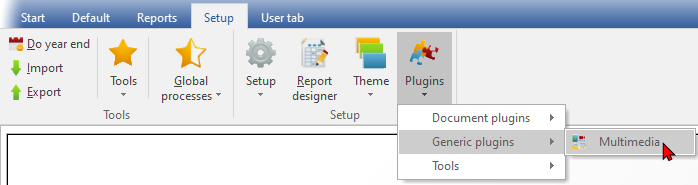
|
|
If the Multimedia is not listed on the Plugins menu, go to the Tools → Activate plugins (Setup ribbon) and Activate the plugin. 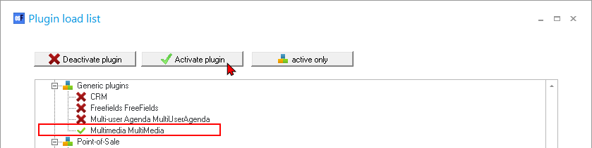 |

- The “Multimedia” screen is displayed:
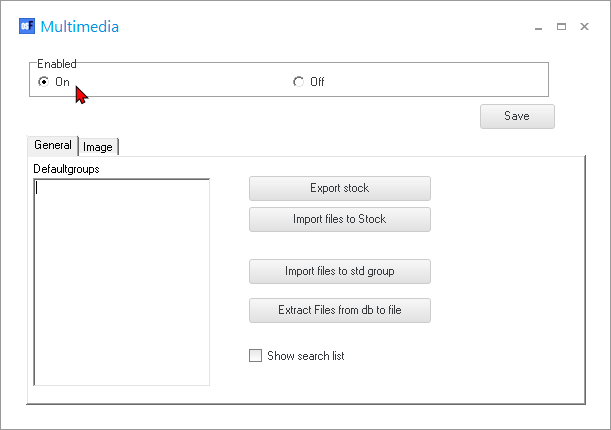
- Click On option to enable it.
- The General options is as follows:
- Defaultgroups – Links the input to default extensions to group types. “Add default groups for file types. Enter a line like this .jpg=testgroup 1 and on the next line .bmp=testgroup 2”
|
|
If you double-click in the Defaultgroups box it will be populated with the following: .jpg=products_image .gif=products_image .png=products_image STOCKGROUPNEXT.JPG=1 STOCKGROUPNEXT.GIF=1 STOCKGROUPNEXT.PNG=1 All files with the extension .jpg will be placed in the first group of the list (products_image for default stock image) the line STOCKGROUPNEXT.JPG makes sure the next unique value will be automatic selected from the list of groups. You add groups by simply typing in your group name. |
- Export stock – This button will launch the “Save As” screen. With the function import files to stock you can add images quickly with a file that contains a stock code and a full image path.
- Import files to Stock – This button will launch the “Open” screen. This file must be a tab delimited file.
- Import files to std group – This button will launch the “Open” screen.
- Extract Files from db to file -
- Show search list – By default this option is not selected. Select this option to add the Multimedia icon to the Default ribbon. This will allow you to filter and search for multimedia files.
- Click on the Image tab.
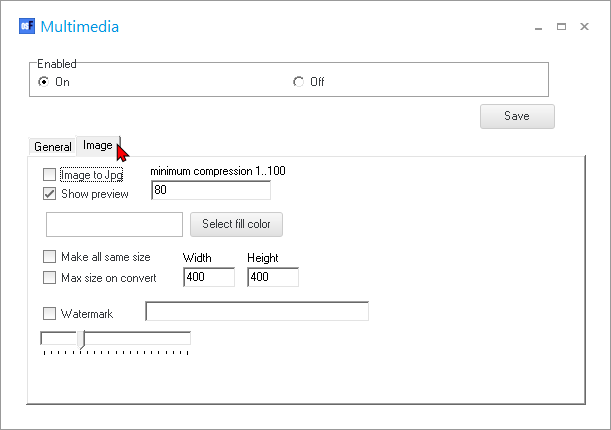
- The options is as follows:
- Image to Jpg – Tick this option to convert a “GIF / PNG / BMP / WMF / EMF” image to the Jpg file format. You may specify the minimum compression ratio from 1 … 100.
|
|
Before selecting the Image to Jpg conversion, it is recommended that you have a copy your images somewhere on your system. If it happens, that the conversion and compression does not work properly, you are covered. |

- Show preview – Tick this option if you have an image file.
- Select fill color – The default color is “White”. This button launches the “Color” screen, on which you may pick from the standard colors or define your own custom colors. This will allow you to convert images to the same size filling up the spaces with a predefined color. It also allows you to see an example adjust and then preview the result until you are satisfied.
- Make all same size – Tick this option, if you wish to convert all images to the same size.
- Max size on convert – You may tick this option to convert all images to a specific size. The default size is 400 x 400. You may enter your preferred size.
- Watermark – If you wish to add a watermark to your images, you may enter text. You may also specify the shading of the watermark from light to dark.
- Click on the Save button. This will add the “Multimedia” tab to the following screens (i.e. Stock items (Products), Creditors (suppliers) and Debtors (customers)). On the screens for Documents (i.e. Invoices, Credit notes, Quotes, Purchases, Supplier returns and Orders) it will add a Multimedia icon from which you may manage and edit the multimedia files.
Managing Multimedia Files
The Multimedia plugin may be accessed from the following options:
- “Multimedia” tab on the following screens:
- Creditors (suppliers).
- Debtors (customers).
- Stock items (Products).
- “Multimedia” icon on the following screens for Documents:
- Debtor (customer) documents (i.e. Invoices, Credit notes, Quotes).
- Creditor (supplier / vendor) documents (i.e. Purchases, Supplier returns and Orders) it will add a Multimedia icon from which you may manage and edit the multimedia files.
- Multimedia in Batches - Context menu on Batch entry screens.
- Multimedia in Groups – Context menu on Reporting group 1 or Reporting group 2 for all available reporting groups.
Multimedia Basics
In this example, the Multimedia tab for Stock items is used to illustrate the options for working with Multimedia files. The basics are similar to those Multimedia tabs and screens launched from other forms.
Adding Multimedia files
The default view is the “List” view.
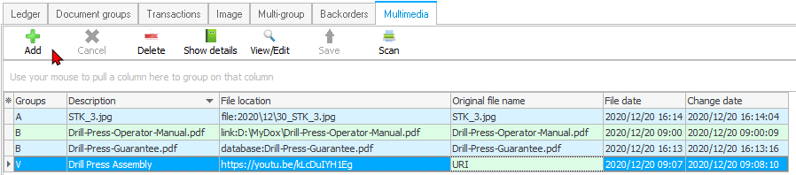
To add a multimedia file, click on the Add button. This will give the following options:
|
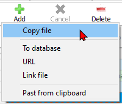 |
Copy file To database URL Link file Paste from clipboard |
file: File name prefixed by yyyy/dd/ and a number. These files are stored in the files folder in sub folders for the year and month. Database: the file name is stored in the database of the Set of Books. Hyperlink or other URI. Just the link is stored. Link: The full path where the selected file is stored on your system. The file name of the file pasted from your systems clipboard. |
|
|
You may click on the column headings (i.e. Groups, Description, File location and original file name to change the sequence of the multimedia files on the list. |

Select one of the above options. The “Open” screen will be displayed for the “To database”, “Link file” and “Copy file” options. Select a valid file format and click on the Open button. The file will be added to the list. You may then enter or edit the Groups and Descriptions on the list as necessary.
|
|
If you select the Add – URL option, the Show details option will be displayed. You then need to enter the Groups, Description, File Location (i.e. ftp or web address of the file) and the original name of the file. |
To view or edit the details, click on the Show details button.
Cancel icon
The Cancel icon is by default inactive. If this icon is activated during a process, you may abort the process.
Delete icon
Select a file and click on the Delete icon. The file will be removed from the list.
|
|
Make absolutely sure that the correct entry is selected. This delete cannot be undone. |
Show details icon
To view or edit the details of a selected item on the list, click on the Show details button.
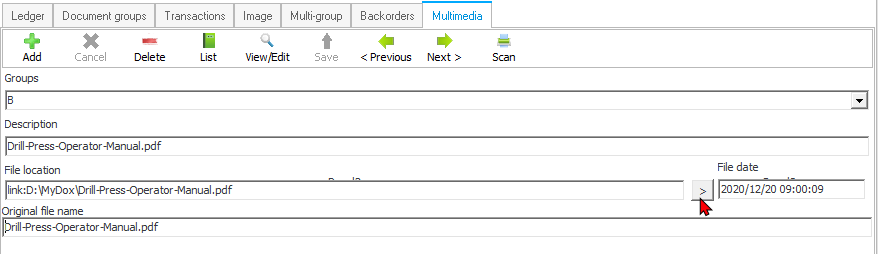
- Groups – Select a group from the list, if necessary. You may also enter (type) a group name, if not on the list. Once this is done, you need to click on the Save icon. The newly entered group, will only be added to the list, once you click on the Save button of the form.
- Description – You may change it if necessary.
- File location – If the “File location” displays the file name preceded by type e.g. link for a linked file; and file for a copied file, you may click on the > (“Open folder”) button to open the file location folder for the selected file.
- File date – Your operating system's date and time will automatically be added for the “To database”, “Link file” and “Copy file” options.
Navigation
- < Previous icon – Click to navigate to the previous record.
- Next icon > – Click to navigate to the next record.
Once finished, click on the List button.
View/Edit icon
Click on the View/Edit button to open a file and view it in the default program associated with the file type on your operating system.
You may print and/or edit the file.
Once you have viewed and or edited the file; and the file is closed, a confirmation message; “Press OK when you are done editing the file to save it to the database!” will be displayed.
Click on the OK button to save the file to the database.
Click on the Save button.
Save icon
Once you have changed (edited) any of the available fields, this Save icon will be activated. Click to save your changes.
|
|
You still need to click the Save button of the form, e.g. Stock items, Debtor / Creditor, etc. If you do not save the form, your added files, or any changes may be lost. |
Scan icon
If you have a TWAIN device configured and setup on your system, then you can directly scan from the device to the Multimedia plugin. TWAIN is supported by Web cams, scanners and other image devices. The “Select Source” screen will be displayed on which you may select a device.
Multimedia Search List
The Multimedia search list is by default this option is not selected. To add the Multimedia icon to the Default ribbon, you need to select (tick) the “Show search list” option on the General tab when activating the Multimedia plugin (Plugins → Generic → Multimedia on the Setup ribbon). This will allow you to filter and search for multimedia files.
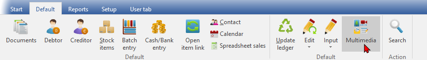
On the Default ribbon, select Multimedia.
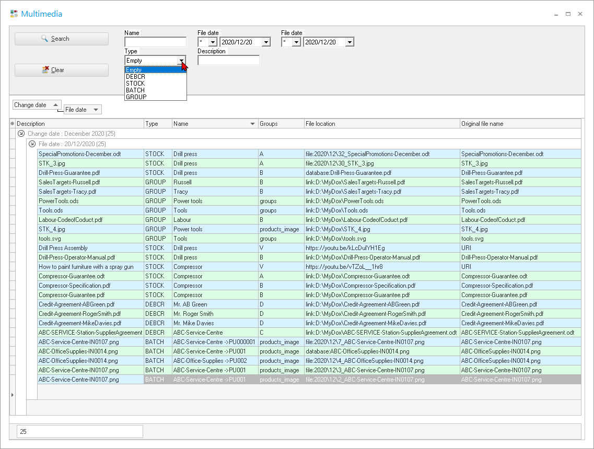
Multimedia search list – Types
The “Types” of Multimedia files are grouped in four (4) basic types:
- DEBCR – Multimedia files added on the Multimedia tab of Debtor / Creditor accounts.
- STOCK – Multimedia files added on the Multimedia tab of Stock items.
- BATCH – Multimedia files added to Batch entry and Document entry screens. The multimedia files added in Batch entry and Document entry screens will only be updated (added) to the Search list, once Batches and Documents are posted (updated) to the ledger.
- GROUP – Multimedia files added for Reporting groups 1 and/or Reporting groups 2 in Setup → Groups (Setup ribbon)).
Multimedia search list – Filter options
In addition to the standard filters (“Type” and “File date”) you may enter a name or a description to search for.
You may drag a column next to the Change date and File date to group the multimedia files for the selected column.
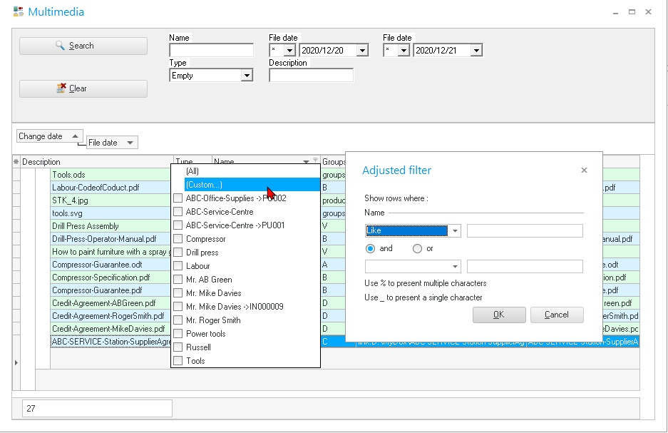
You may also build custom filters (adjusted filters).
Multimedia File Options
Multimedia – Groups
To add Multimedia files to Reporting groups:
- On the Setup ribbon; select Setup → Groups.
- Select the Reporting group.
- Select the group in the “REPORTING GROUP ROOT”
- Right-click and select “Multimedia”.
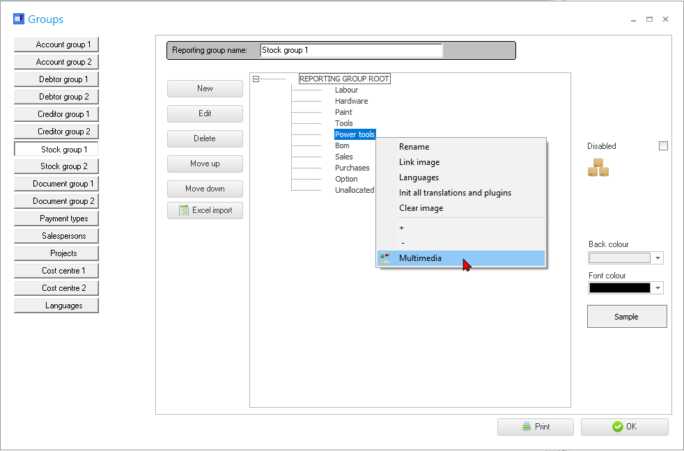
- The “List view” of the “Multimedia” screen will be displayed.
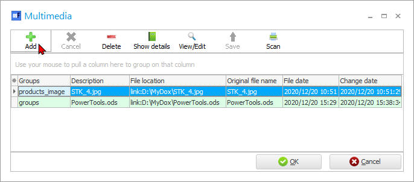
- Click on the Add button and select the “To database”, “Link file” and “Copy file” or “URL” options. (See MULTIMEDIA BASICS).
- Click on the OK button to save the multimedia files to the selected group.
GROUPS - Multimedia search list
The details for GROUP on the “Multimedia search list” (Multimedia icon on Default ribbon), is as follows:
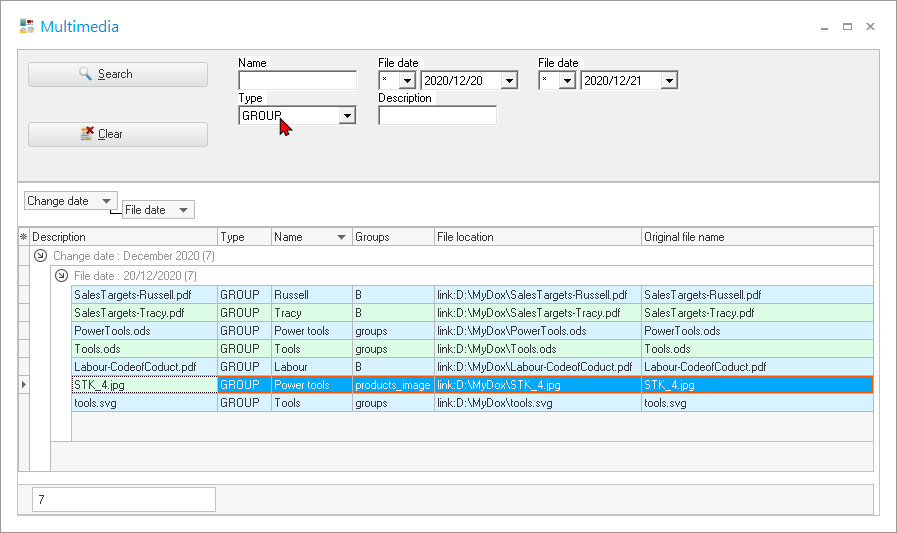
Name this is the Name of the group to which multimedia is added. In this example, multimedia files are added to the groups as follows:
- Salespersons – Russell and Tracy.
- Stock group 1 - Power tools (an image for Power tools and a Spreadsheet). For tools an image and a spreadsheet is added. For Labour, the Code of Conduct.pdf document is added.
To view and edit the Multimedia files:
Select an item on the list and double-click on it.
Multimedia – Debtors (customers) / Creditors (suppliers)
To add multimedia files to debtors (customers) / creditors (suppliers):
- On the Default ribbon, select Debtors or Creditors.
- Select a specific Debtor (customer) or Creditor (supplier / vendor) account.
- Click on the Multimedia tab. The “List view” of the “Multimedia” screen will be displayed.
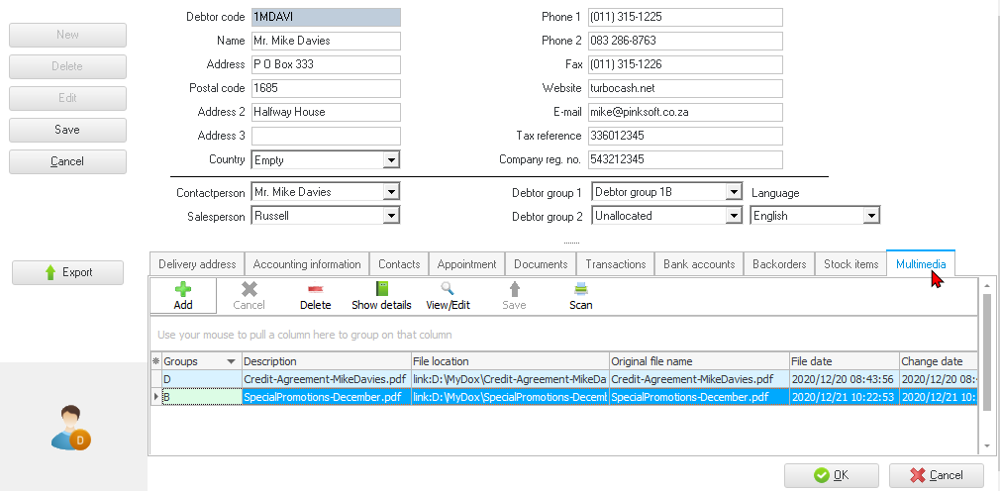
- Click on the Add button and select the “To database”, “Link file” and “Copy file” or “URL” options. (See MULTIMEDIA BASICS).
DEBCR - Multimedia search list
The details for DEBCR on the “Multimedia search list” (Multimedia icon on Default ribbon), is as follows:
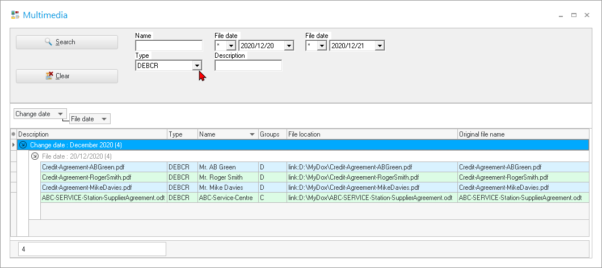
To view and edit the Multimedia files:
Select a debtor (customer / client) or creditor (supplier / vendor) on the list and double-click on it.
Multimedia – Stock items (Products)
To add multimedia files to stock items (products):
- On the Default ribbon, select Stock items
- Select the stock item (product).
- Click on the Multimedia tab. The “List view” of the “Multimedia” screen will be displayed.
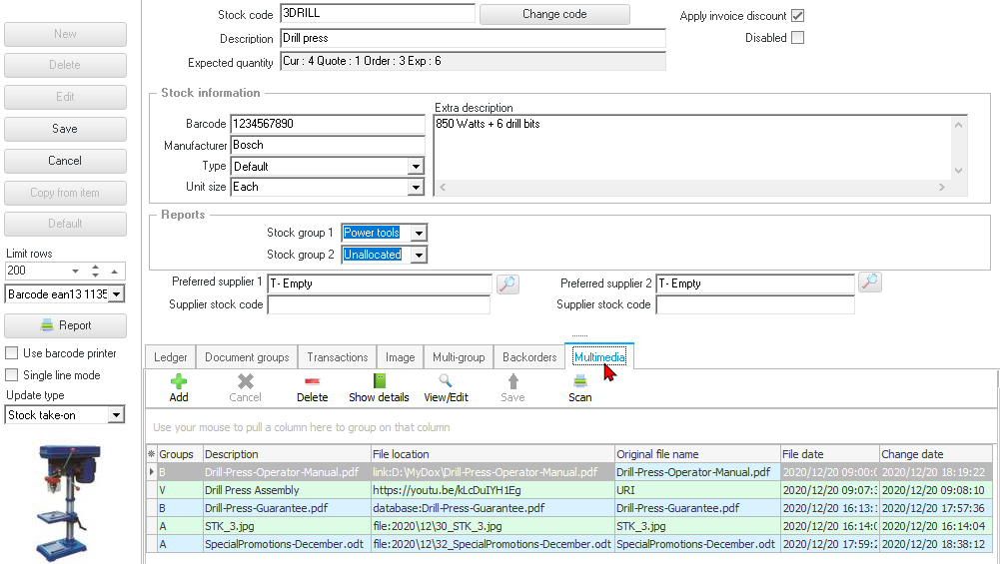
- Click on the Add button and select the “To database”, “Link file” and “Copy file” or “URL” options. (See MULTIMEDIA BASICS).
STOCK - Multimedia search list
The details for STOCK on the “Multimedia search list” (Multimedia icon on Default ribbon), is as follows:
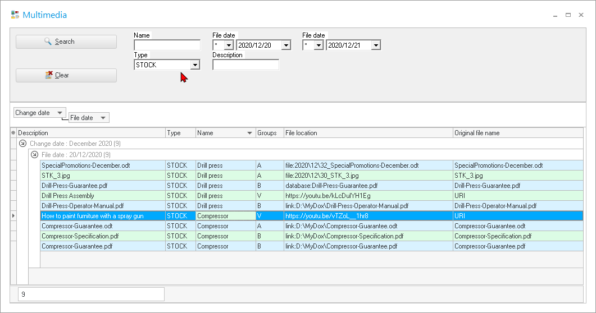
To view and edit the Multimedia files:
Select a stock item (product) on the list and double-click on it. All the multimedia files will be listed for a selected stock item (product).
Multimedia – Transactions
Multimedia – Documents
The multimedia files added in Document entry screens will only be updated (added) to the Multimedia search list, once the Documents are posted (updated) to the ledger.
This plugin may be used to manage multimedia files on the following documents:
- Sales documents (i.e. Invoices, Credit notes and Quotes).
- Purchase documents (i.e. Purchases, Supplier returns and Orders).
To add Multimedia files on Documents:
- On the Default ribbon, select Documents. The “Document entry” listing “Invoices” will be displayed. If necessary, select the document type you wish to process.
- To edit a selected document click Edit / or New to create a new document.
- Click on the Multimedia icon. The “List view” of the “Multimedia” screen will be displayed.
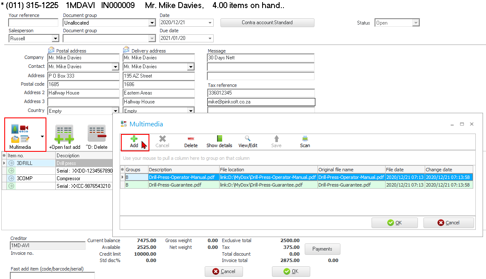
- Click on the Add button and select the “To database”, “Link file” and “Copy file” or “URL” options. (See MULTIMEDIA BASICS).
|
|
If you need to add multimedia files for more than one stock item (product), you need them all on the document. |
- Click OK on “Multimedia screen.
- Click OK on the Document entry screen.
To view the Multimedia files added to stock item:
Select the stock item (product) and click on the Multimedia icon. The Multimedia list view screen will list the multimedia files for the stock item.
Multimedia - Posted documents
Multimedia files attached to a posted document, may be viewed.
To do this;
- Select a posted document and double click.
- Click on the Multimedia icon. The “List view” of the “Multimedia” screen will be displayed.
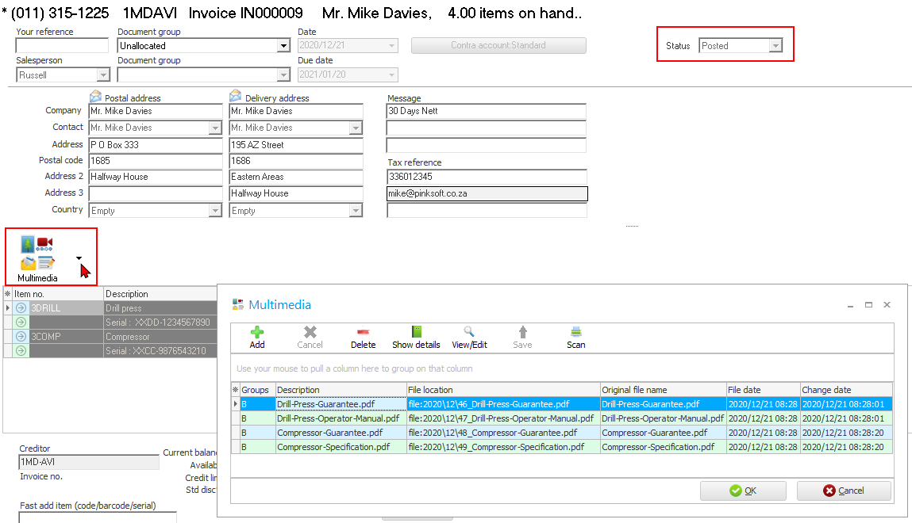
- Show details this will display the details for the multimedia file. If you click on the > Open folder button (on the right side of the If the “File location” displays the file name preceded by type e.g. link for a linked file; and file for a copied file, you may click on the > (“Open folder”) button to open the file location folder for the selected file.
- Click on the View/Edit button to open a file and view it in the default program associated with the file type on your operating system.
- You may print and/or view the file.
- Click on the OK button to close the Multimedia screen.
- Click on the Cancel button of the Document entry screen.
|
|
If you add a multimedia file or delete the multimedia file on a Posted document, your changes will not be saved. The reason for this, is that you cannot edit a posted document. |
Multimedia – Batches
The multimedia files added to transactions in Batch entry screens will only be updated (added) to the “Multimedia search list”, once the batches are posted (updated) to the ledger.
To add Multimedia files to Batch transactions:
- Select the batch type. Once you have entered a transaction, you may add Multimedia files.
- On a selected transaction in the Batch entry screen, right-click on a transaction.
- On the context menu, select the “Plugin action → Multimedia” option.
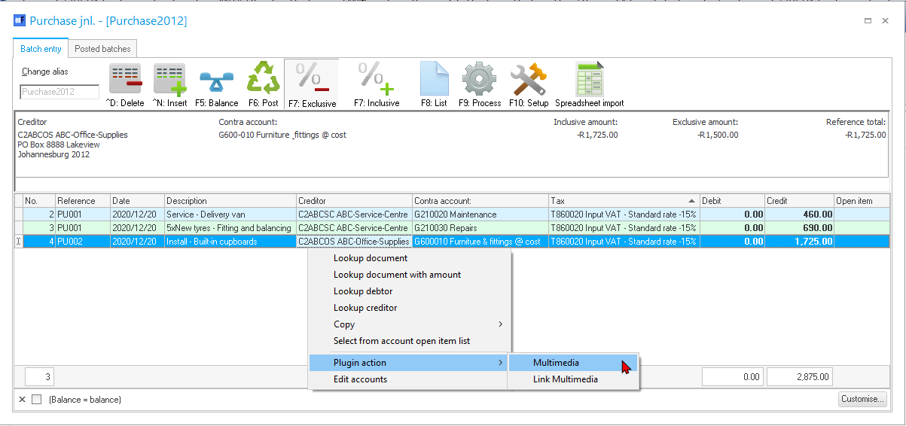
- The “List view” of the “Multimedia” screen will be displayed.
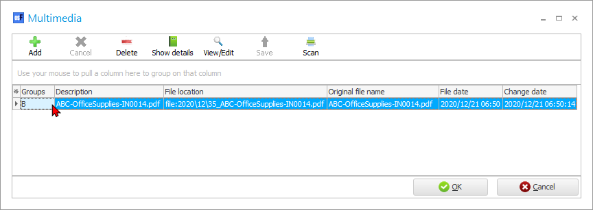
- On the Multimedia screen, click on the Add button and select the “To database”, “Link file” and “Copy file” or “URL” options. (See MULTIMEDIA BASICS).
- Click OK on the multimedia screen.
To view the Multimedia files added to transactions in a unposted batch:
Select the transaction and double-click on it. The Multimedia list view screen will list the multimedia files for the transaction.
BATCH - Multimedia search list
Once again, only the transactions or documents linked to multimedia files will be listed, if the batch or document is posted (updated) to the ledger.
The details for BATCH on the “Multimedia search list” (Multimedia icon on Default ribbon), is as follows:
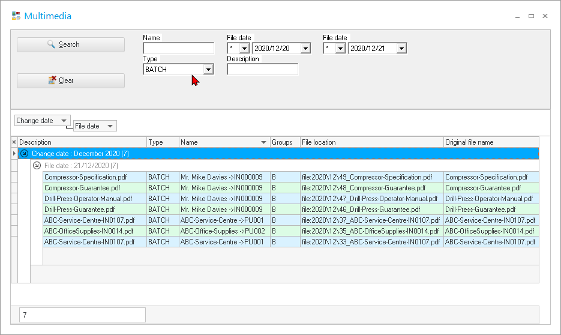
Identifying whether the transaction is processed in a document or a batch:
- Documents – The document number as generated when creating a document will be displayed after the name of the debtor (customer / client) / creditor (supplier / vendor). In this example, “Mr. Mike Davies -> IN000009” is listed. The document numbers are prefixed and set in the Setup → Documents setup (Setup ribbon).
- Batch entry – The reference entered in the “Reference” column for the transaction.
To view and edit the Multimedia files:
Double-click is not permitted to view and edit multimedia files for posted batches and or documents.
|
|
You may open a posted document and view the Multimedia files. (See “Multimedia files - Posted documents”). |
Multimedia – Projects
If you have activated Projects (on Setup → System parameters (Setup ribbon)), and created Projects on the Input → Projects menu, the Multimedia plugin will add a tab to the Projects.
Multimedia Files for Other Plugins
E-Mail Invoice Pro plugin
The E-mailPro plugin is bundled with the Multimedia plugin only for use with the E-mailPro plugin. To enable and use the Multimedia plugin for all other features, you need to purchase and activate it separately.
If you also have the E-mailPro plugin, it will also be linked to the document that was sent to the debtor (customer / client) / creditor (supplier / vendor). This makes finding that email to the client with great ease. The outlook link plugin can scan through your outlook in and out box to see if there is e-mail that uses the clients e-mail address. If so it copies the e-mail to the multimedia of that debtor (customer / client) / creditor (supplier / vendor).
Reminders / Remittance plugin
The Reminders plugin is bundled with the Multimedia plugin only for use with the Reminders plugin. To enable and use the Multimedia plugin for all other features, you need to purchase and activate it separately.
More Plugins that make use of the multimedia
- E-commerce -
- Outlook sync -
- CRM -